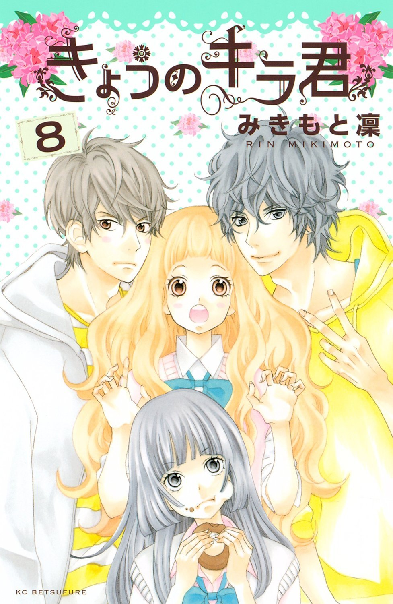

INFORMACIÓN
Titulo:
Kyou No Kira-kun
Autor:
Mikomoto Rin
Genero:
Romance, Drama, Vida Cotidiana, Tragedia, Vida Escolar, Drama
En 360 días, había días brillantes y decepción mientras yo estaba mirando. A pesar de que eran vecinos, Nino y Kira nunca había hablado el uno al otro ... Pero cuando se enteró de Nino secreto de Kira, su vida cambia y todos los días se hicieron más interesante! Su enlace los llevará a un amor que un paraíso.